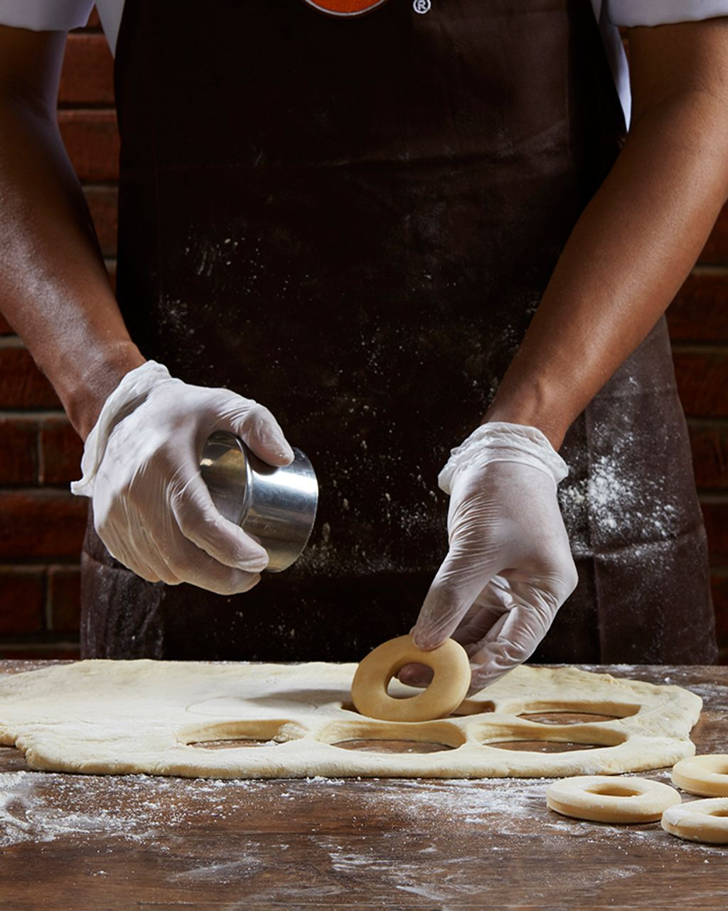
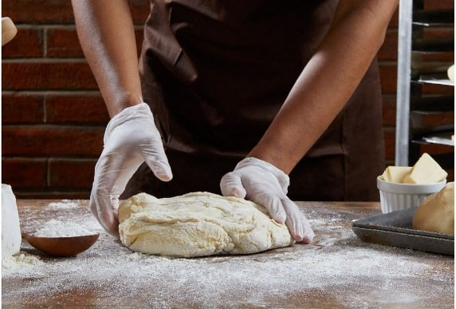
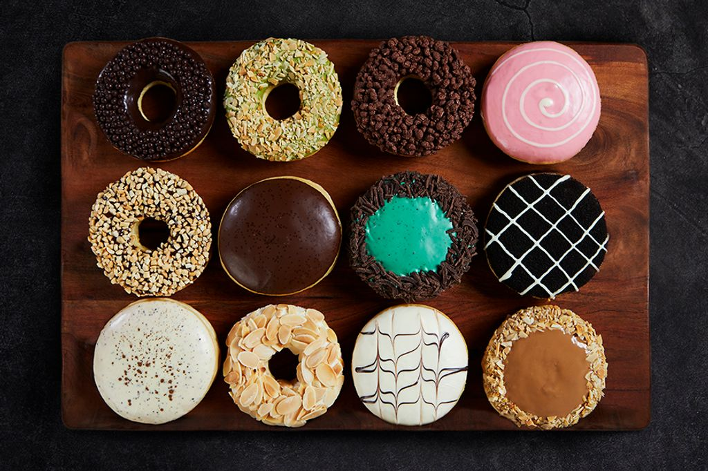
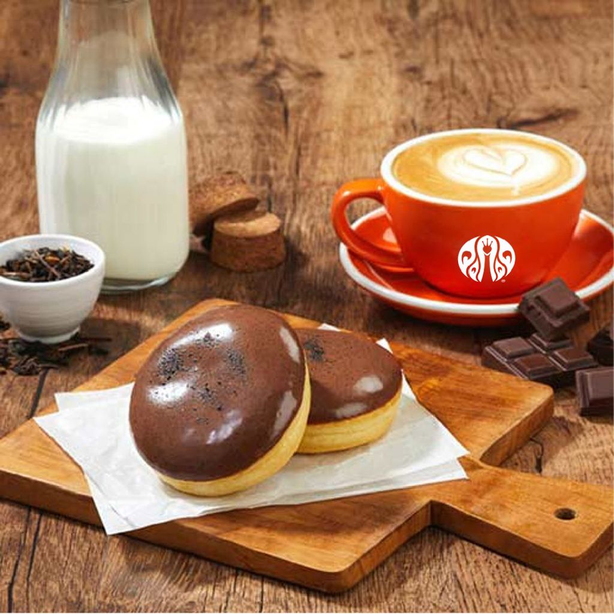
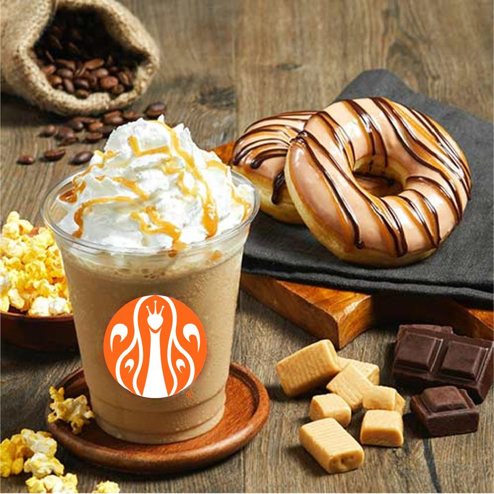

Our dough recipe took years and many trials to perfect, just like Edison’s light bulb.
Before we launched in 2005, we went through countless iterations
to find the perfect balance, texture, and base for all of the artisanal toppings we would put on top.
Freshly made from scratch, our soft and fluffy donuts melt in your mouth in all their glorious varieties.

OUR FLUFFY DONUTS
The secret to our donuts isn’t just in our dough, but in the finest quality
ingredients that “speak” for themselves. Rich and dark chocolate, crunchy and
crisp Australian almonds, New Zealand smooth cream cheese,
and premium Japanese matcha just to name a few. We don’t do shortcuts.
Real ingredients are more delicious.


We are on a never-ending journey to
source the best ingredients from around
the world.
It excites us to share endless
flavor combinations that our customers
come to know and love.